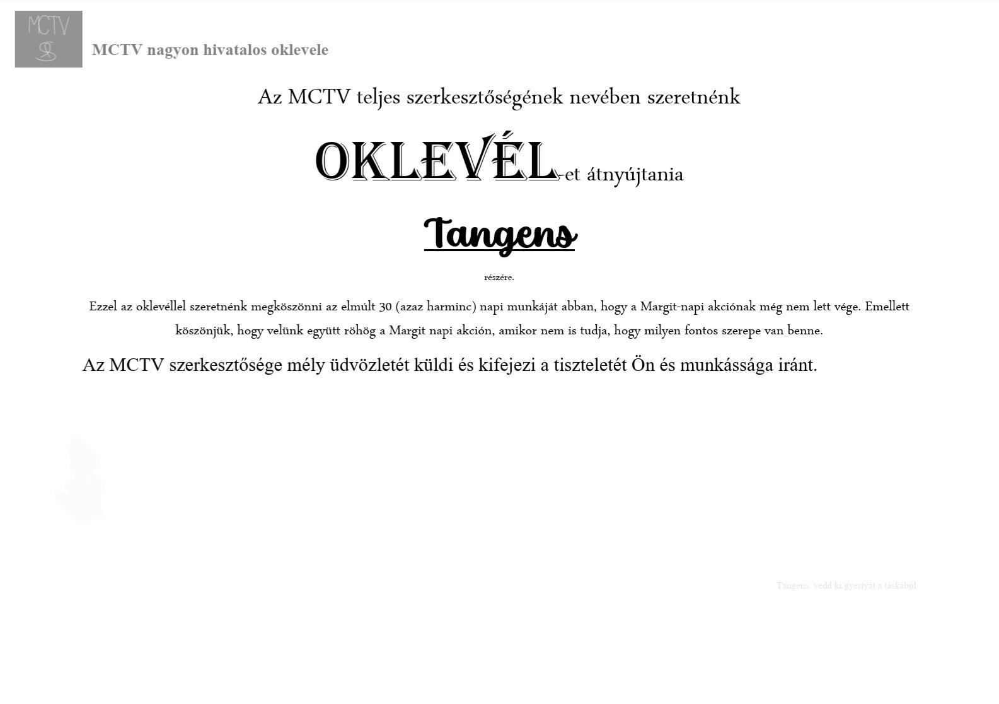

30 nap telt el Margit nap óta
Nagyon szépen köszönjük az együttműködést az egész MCTV szerkesztőségétől és olvasóitól, akik lehetővé teszik a Margit napi akciót. Ez a 30-adik nap a Margit napi akció kezdete óta és örömmel közlöm, hogy az akció jól áll. Minnél tovább tartjuk az akciót, annál jobb, remélhetően a 60-adik napi mérföldkövet is el fogjuk érni, amihez mostmár fél úton járunk.